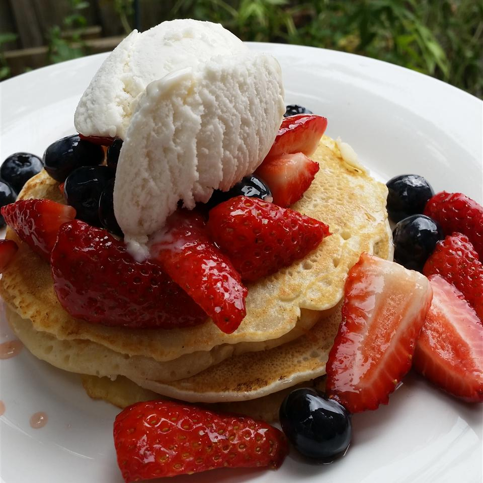

Vegan Pancake

Ingredients
- 1 ¼ cups all-purpose flour
- 2 tablespoons white sugar
- 2 teaspoons baking powder
- ½ teaspoon salt
- 1 ¼ cups water
- 1 tablespoon oil
Steps
- Sift the flour, sugar, baking powder, and salt into a large bowl.
- Whisk the water and oil together in a small bowl.
- Make a well in the center of the dry ingredients, and pour in the wet.
- Stir just until blended; mixture will be lumpy.
- Heat a lightly oiled griddle over medium-high heat.
- Drop batter by large spoonfuls onto the griddle, and cook until bubbles form and the edges are dry.
- Flip, and cook until browned on the other side.
- Repeat with remaining batter.
Return to homepage